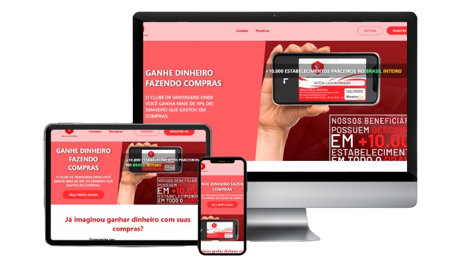

Apresentação
Arthur Candeia Heher
DESENVOLVEDOR
FULL-STACK
Quem sou eu?
Hard Skills
Projetos Principais
Checklist

Projeto Full-Stack SPA feito com react e com hospedagem ativa no MongoDB Atlas! Nele coloquei em prática diversos aprendizados, como schema, rotas, componentização, entre outros. O projeto possui 4 páginas principais: login, logado, novo usuário e termos de uso. O usuário pode: criar novas tarefas, editá-las, excluí-las e marca-las como concluídas!
React • MongoDB • Mongoose • JavaScript • Node.js • Express.js • SASS
Acessar🔗 Repositório🔗Loja Precisei
E-commerce completo, com paleta de cores monocromática e fontes personalizadas. Possui diversas páginas e responsividade excepcional. Nesse projeto, podemos selecionar tamanho, quantidade e cor do vestuário, ver suas características e avaliações, ver sua história e contatar o FAQ, adicionar o carrinho e confirmar o pagamento. Esse projeto foi feito no início do meu aprendizado e não passou por refatoração!
JavaScript • HTML5 • CSS3
Acessar🔗 Repositório🔗Space Bootstrap

Projeto do curso FullStack que realizei! Feito inteiramente com Bootstrap e SASS, esse projeto correspondea um dos mais belos que já desenvolvi. Possui diversas animações e qualidades de imagem excelentes. Tudo isso além de aplicação de diversos conceitos/elementos do Bootstrap atrelados à responsividade.
Bootstrap • SASS • HTML5
Acessar🔗 Repositório🔗Buscador de Imagens

Projeto feito para facilitar o encontro de imagens gratuitas! Esse projeto consome a API da Unsplash que contém mais de 1.000.000 de imagens. As fotos são exibidas com base em um campo de texto e a escolha entre retrato e paisagem. Além disso, cada uma das imagens pode ser baixada, de forma prática e rápida! Gostei bastante de desenvolver o projeto, pude trabalhar com múltiplas staks simultaneamente, além de usar Hooks e renderização condicional!
React • JavaScript • SASS • Bootstrap
Acessar🔗 Repositório🔗Biblioteca de Jogos

Projeto desenvolvido inteiramente com React! Trata-se de uma Biblioteca de jogos onde podemos salvar um novo jogo com sua capa e também excluir jogos. Todos os jogos salvos ficam no localStorage do aparelho utilizado, mantendo salvo todos os games! Nele temos renderização condicional e criação de hooks personalizados
React • CSS3
Acessar🔗 Repositório🔗Calculadora JS

Projeto feito para fixar conteúdos do DOM (Document Object Model)! A calculadora possui funções como: troca de temas (dark/light), cópia de resultados para área de transferência e display error em caso de contas inválidas! Além de clicar nos botões da calculadora, o usuário pode usar o próprio teclado para digitar, porém há uma verificação para permitir a entrada apenas de números e símbolos válidos.
JavaScript • HTML5 • CSS3
Acessar🔗 Repositório🔗